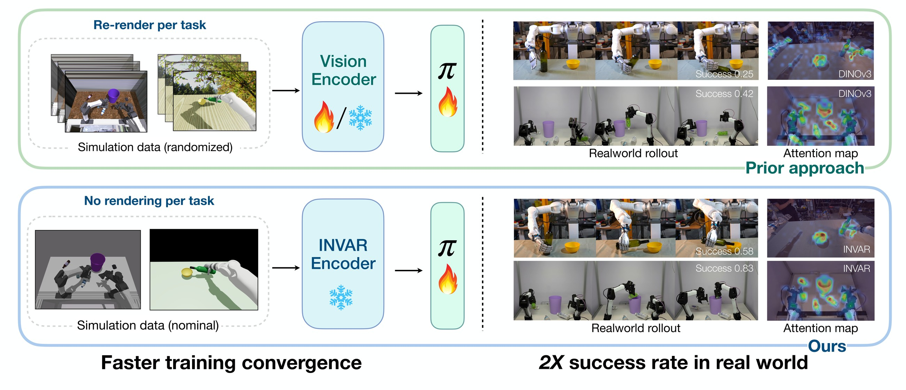
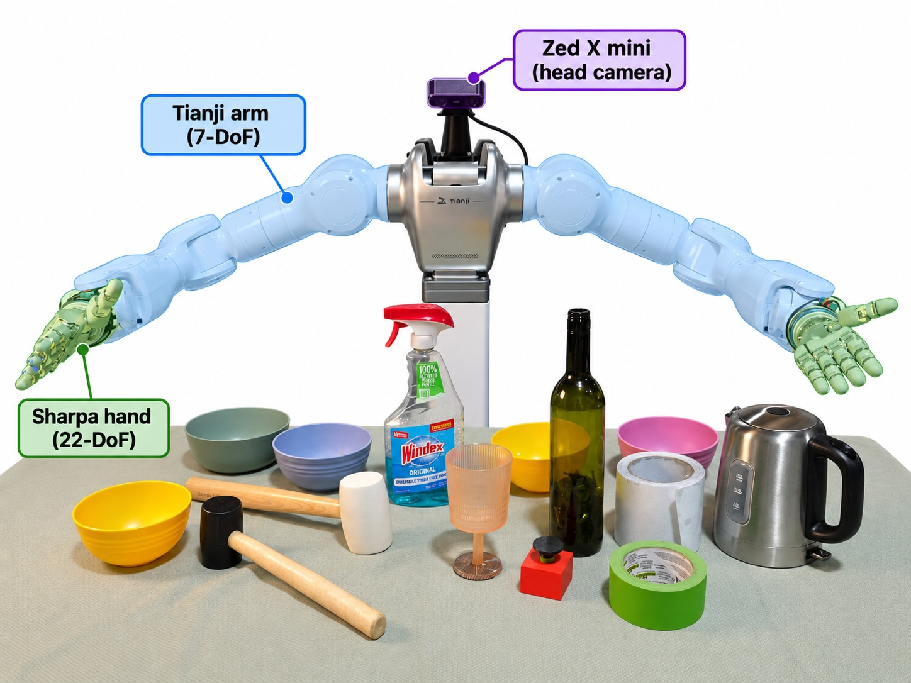
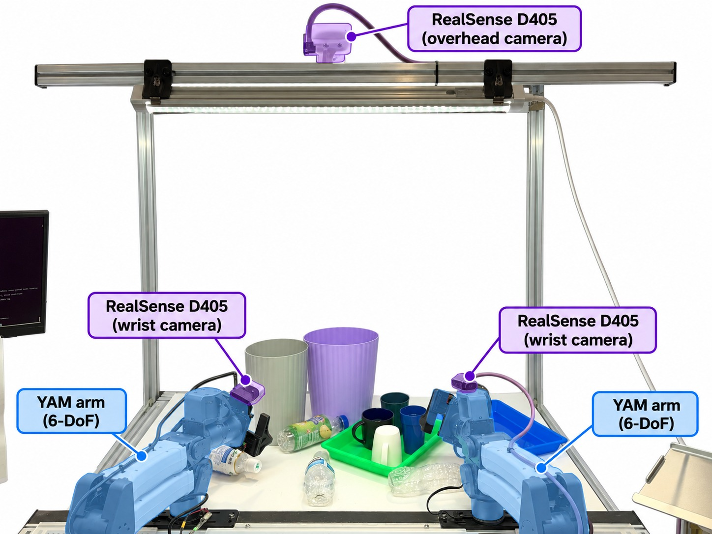
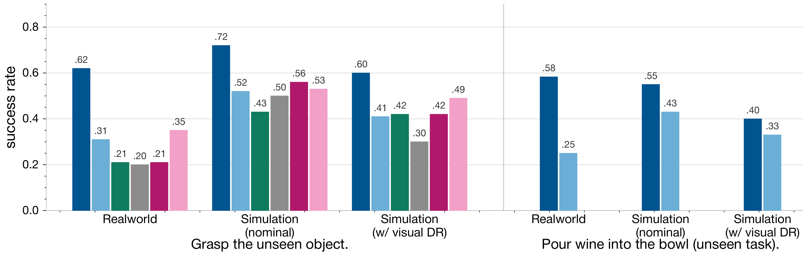
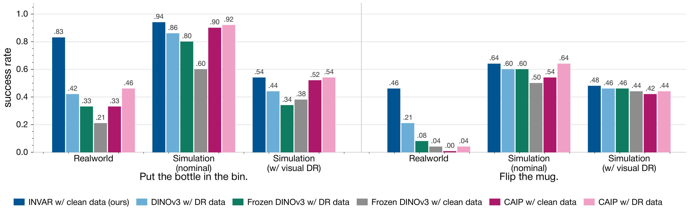
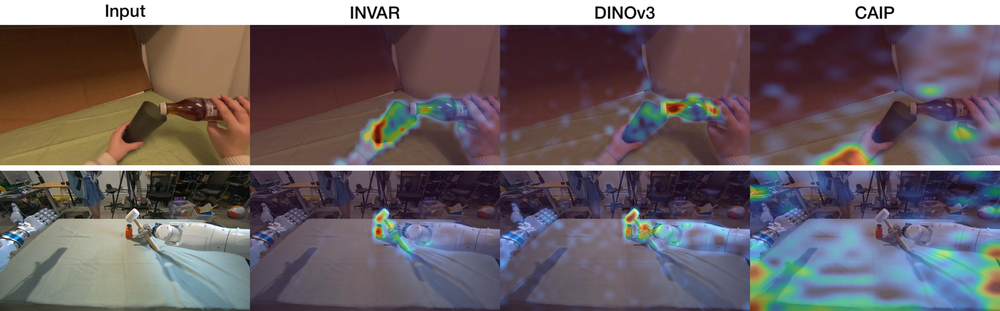

Abstract
Humans know to act consistently across real and simulated environments because they can abstract away visual appearance to what matters for the task. Can robots achieve similar visual invariance? We present INVAR, a visual representation for zero-shot sim-to-real transfer. While classic sim-to-real methods rely on task-specific domain randomization (DR) to train visual encoders and action policies, INVAR distills diverse simulation randomizations into a unified, invariant visual encoder that is self-supervised and scalable. It leverages self-distillation over an unlabeled corpus of simulated play data and robot rollouts without requiring real-world images during representation learning. A policy trained purely on clean simulation data with a frozen INVAR encoder transfers zero-shot to the real world. INVAR nearly doubles the success rate of identical policies built on state-of-the-art pretrained encoders trained with standard DR, across both dexterous grasping (0.62 vs. 0.35 mean success) and parallel-gripper manipulation (0.65 vs. 0.32). These results demonstrate that decoupling visual invariance into a task-agnostic encoder unlocks scalable, zero-shot sim-to-real transfer, similar to humans.
Method
INVAR formulates domain randomization as a structured objective for representation learning. We construct a pretraining dataset of paired observations, extracting both a canonical clean render and a domain-randomized render from identical underlying simulator states. Through a self-distillation objective, we align these pairs to enforce an encoder representation that is invariant to the visual perturbations parameterized by the DR distribution. The pretraining corpus aggregates these paired observations across three simulated embodiments, and a linear action probe selects checkpoints. For downstream evaluation, the pretrained encoder is frozen, and a behavior-cloning (BC) policy is trained entirely atop the invariant feature space.

Zero-Shot Real-World Results
All evaluations measure zero-shot transfer to objects and tasks strictly excluded from pretraining, on two physical platforms. On the dexterous-hand suite, the evaluation introduces a five-object suite of unseen objects and an unseen task and motion (pour wine into bowl). On the bimanual parallel-gripper suite, both the target objects and the task concepts (bottle-in-bin, mug-flipping) are absent from the pretraining corpus.




Real-Robot Rollouts
All policies below are trained purely on clean simulation data atop the frozen INVAR encoder and deployed zero-shot on real hardware.
What Does INVAR Attend To?
